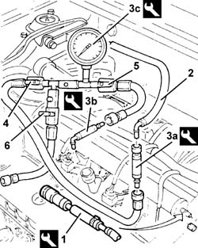

0510C10 fuel system - check delivery pressure
- Path
- Procedures > 05 DIAGNOSTICS > 0510 VARIOUS CONTROLS > 0510C check systems > 0510C10 fuel system - check delivery pressure
- Kind
- repair procedure (removal / refitting; the operation number is the code)
- Applies to
- engines: 1.6 TS, 2.0 TS; all production periods
- Interactive page
- https://sloeber94.github.io/elrnDB-a147/en/#/3024740
Applies to: engines: 1.6 TS, 2.0 TS; all production periods
1. Connect the equipment to the fuel manifold bleed valve and discharge the fuel pressure.
 | Name | Country |
|---|---|---|
1 | Rapid connector | 1.870.684.000 |
2. Disconnect the fuel supply pipe from the distribution manifold.
3. Fit the tools (3a) and (3b) on the tool (3c).
| Name | Country |
|---|---|---|
3a | Connectors kit | 1.860.955.003 |
| Name | Country |
|---|---|---|
3b | Connectors kit | 1.860.955.001 |
| Name | Country |
|---|---|---|
3c | Pressure gauge | 1.860.955.000 |
Connect the equipment thus obtained to the fuel supply pipe and fuel manifold.
4. Open the ball valve.
5. Open the ball valve.
6. Close the ball valve.
Start the engine and, at idle speed, check that the fuel pressure is within the specified values.
 | Measurement | Value | |
|---|---|---|---|
- | Idle fuel pressure (bar) | 3.3 - 3.7 |
Turn off the engine.

Applies to: engines: 1.6 TS, 2.0 TS; all production periods
Disconnect the tools from the fuel manifold and fuel supply pipe.
Connect the fuel supply pipe to the fuel manifold.
Topics that link to this page (15)
- B10 ENGINE DOES NOT START / UNDER NO CIRCUMSTANCES
- B13 ENGINE STARTS WITH DIFFICULTY'
- B20 ENGINE STARTS, AND CUTS OUT STRAIGHT AWAY
- D01 ENGINE NOT RUNNING SMOOTHLY / (HESISTANT)
- D02 ENGINE NOT RUNNING SMOOTHLY / (LOSING POWER)
- D03 ENGINE NOT RUNNING SMOOTHLY / (IRREGULAR OPERATION)
- D05 ENGINE DOES NOT PRODUCE BEST PERFORMANCE
- D10 ENGINE IDLE IRREGULAR
- D21 ENGINE CUTS OUT WHILST DRIVING
- W01 HIGH CO EMISSIONS
- W02 CO EMISSIONS LOW, NOx EMISSIONS HIGH
- W10 BLACK EXHAUST FUMES
- X01 EXCESSIVE FUEL CONSUMPTION
- Z53 MISFIRE ERROR
- Z54 MISFIRE ERROR IN ONE CYLINDER